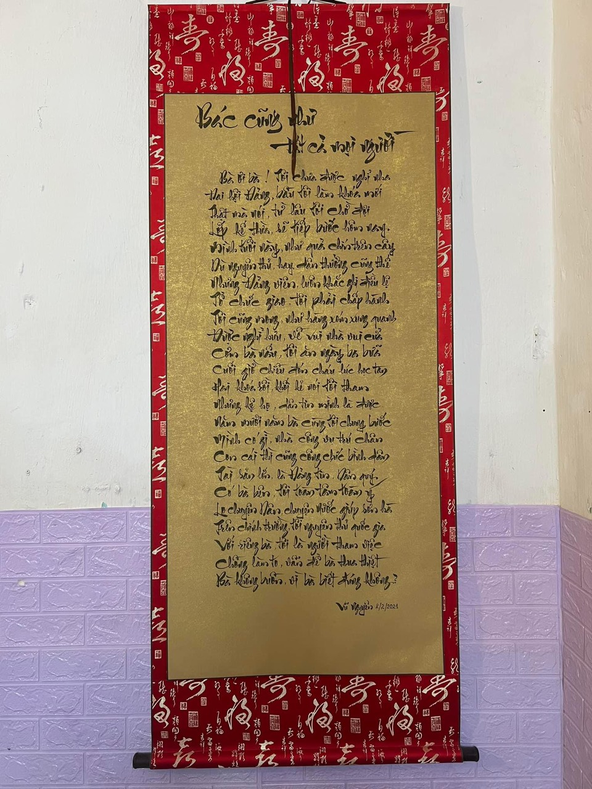
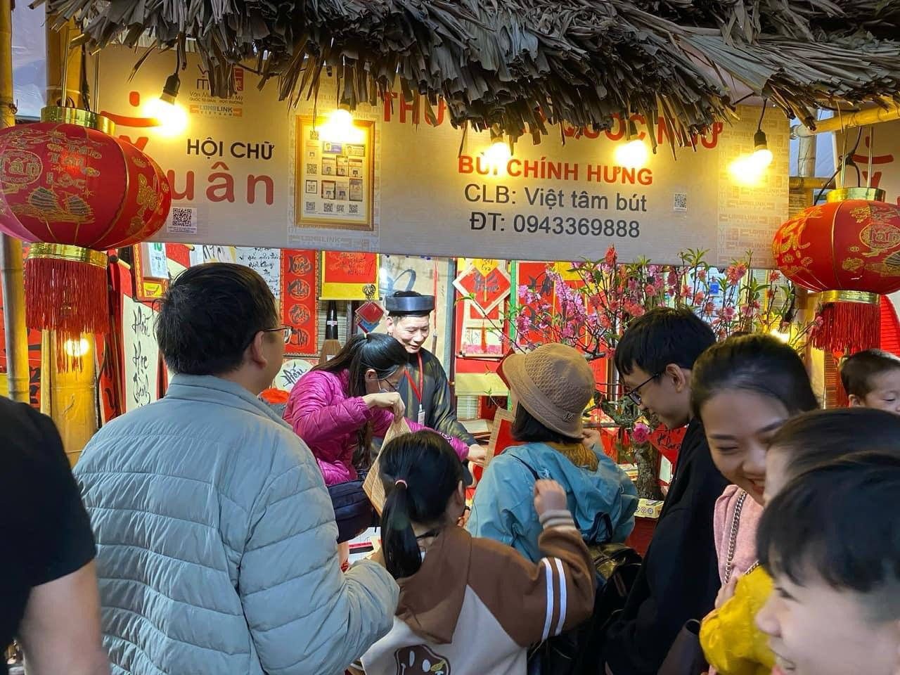
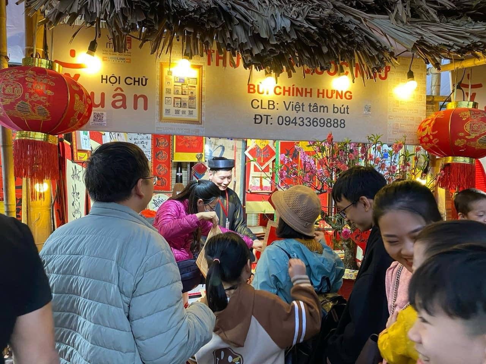

Thư Pháp Ngọc Đình

Từ xưa, thư pháp đã là thú chơi tao nhã và là môn nghệ thuật mà dân gian liệt kê là môn
nghệ thuật đỉnh cao “Nhất chữ – nhì tranh – tam sành – tứ kiểng“. Ngày nay, khi xã hội
ngày càng phát triển, đời sống vật chất và tinh thần ngày càng được nâng lên, thì nghệ
thuật chơi chữ cũng ngày càng được đề cao và chú trọng. Vì thế mà xưa nay tục Xin chữ,
hình ảnh Ông đồ tặng chữ chính là nét đẹp truyền thống của người Việt Nam. Đến ngày
nay thì tranh chữ chính là món quà cao cấp nhất, ý nghĩa nhất.
Thư pháp, một mặt đáp ứng nhu cầu thẩm mỹ của người chơi chữ, là món quà tinh thần,
chúc tụng gửi tặng nhau, nhưng mặt khác đó cũng chính là hệ thống tư tưởng, tình
cảm và những đúc kết kinh nghiệm sống, lời răn nhủ, giáo dục rất sâu sắc được gửi
gắm qua con chữ được nghệ nhân thể hiện qua ngòi bút lông kỳ diệu.
Ngoài ra, xét về phong thủy, treo thư pháp trong nhà một cách nào đó là một phương
pháp đuổi tà khí, hút vượng khí, làm cho không gian nhà bạn sáng sủa và trang trọng
hơn. Tất cả những điều đó làm cho mỗi chúng ta hòa được không gian với tâm thức của
mình, mang lại sự thoải mái trong tâm lý, sự trang trọng trong phong cách, và sự hiệu
quả trong công việc cũng như trong cuộc sống.
Câu lạc bộ Thư pháp Việt UNESCO
CLB Thư pháp Việt Unesco là tổ chức thuộc Trung tâm Unesco Phát triển Văn hóa và Thể
thao – một tổ chức nghiệp vụ, hoạt động theo tôn chỉ và mục đích của Tổ chức Unesco,
là cơ quan trực thuộc, chịu sự lãnh đạo và quản lý trực tiếp của Hiệp hội Câu lạc bộ
Unesco Việt Nam. Câu lạc bộ là tổ chức xã hội tự nguyện, tập hợp, liên kết những người
yêu thích nghệ thuật thư pháp Việt, với mục đích hướng đến cái đẹp, góp phần khẳng
định phát triển, tôn vinh nghệ thuật viết chữ Việt và tác phẩm thư pháp Việt, phục
vụ nhu cầu thưởng lãm của quần chúng. Từ đó góp phần tôn vinh văn hóa truyền thống
Việt, cùng với những hoạt động văn hóa-xã hội của các đoàn thể, góp phần nâng cao
đời sống tinh thần của nhân dân.
Tác giả Ngọc Đình
Tên thật là Phạm Đình Ngọc( SN 1983), có bút danh là Ngọc Đình, tên tự là Châu An.
Quê quán: Ngũ Phúc – Kim Thành – Hải Dương. Chỗ ở hiện nay: La Phù- Hoài Đức- Hà Nội.
Tốt nghiệp Cử nhân Ngữ văn- Báo chí, Thạc sĩ Hán Nôm. Công việc: Làm báo, viết thư pháp,
vẽ tranh và dịch thuật.
Mọi chị tiết xin liên hệ:
Thư pháp Ngọc Đình
ĐT: 0915 86 99 66, 0972 472 186
E-mail: ngocdinhshu@gmail.com
Website: thuphapngocdinh.net
ĐC: Kim Cổ Thư Quán, Công viên Thiên đường Bảo Sơn, An Khánh – Hoài Đức – Hà Nội
Thông tin liên hệ
Địa chỉ: Kim Cổ Thư Quán – Khu du lịch Thiên Đường bảo sơn – An Khánh – Hoài Đức – Hà Nội
Hotline 0915869966 – 0972472186
Email: ngocdinhshu@gmail.com
Website: thuphapngocdinh.net
Coppyright © 2022 Thư pháp Ngọc Đình/ Powered by …


 
